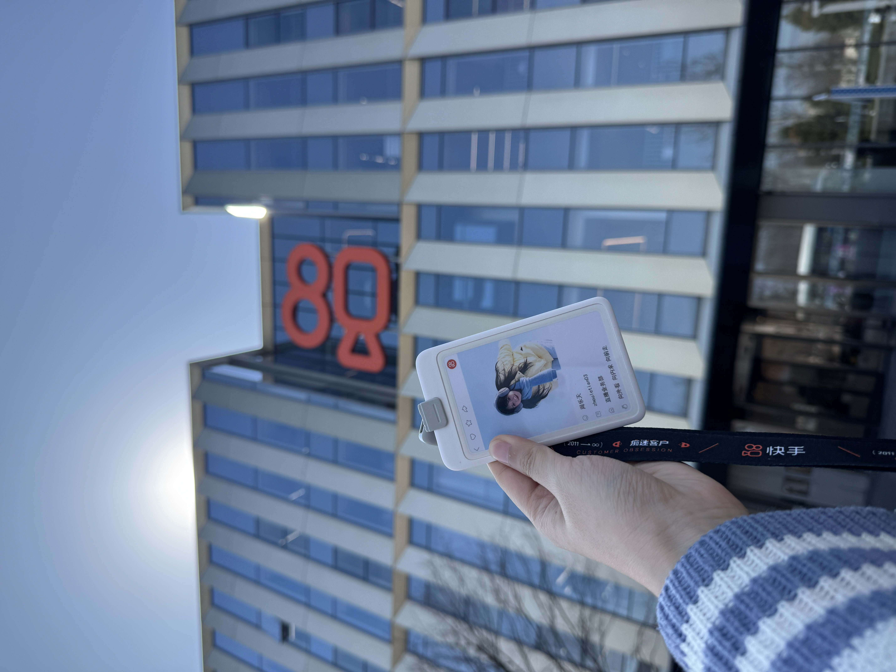

快手
产品经理2025.12-2026.04
- 公会线上拉新优化：针对公会站内建联工具（榜单招募、直播间招募和主播建联）招募效果差的现状，通过专项的用户路径和用户调研，定位出公会与主播双边需求错配的痛点，通过优化榜单排序、新增地域筛选及丰富公会详情页内容等产品方案，降低双边建联匹配成本，提高公会线上拉新主播规模，日均公会线上渠道入会主播数提高15%。
- 新主播开播规模提升：为提升新开播主播开播规模，针对有价值的纯新主播在侧边栏和个人中心开放主播中心，根据新主播内容焦虑等痛点设计页面，引入新手教程和直播案例等模块以降低开播门槛，最终引导2K+纯新主播开播。
- 直播生态内组织管理：推动低价公会主播 PK 陪跑等的落地，引入“跟 PK”大部分标签并升级 PK 次数限制。负责人需分页面前端规则则透传，梳理离线 T+1 人群包与实时信用分变动的边界场景，保证上线后台大盘核心约束指标保持平稳。